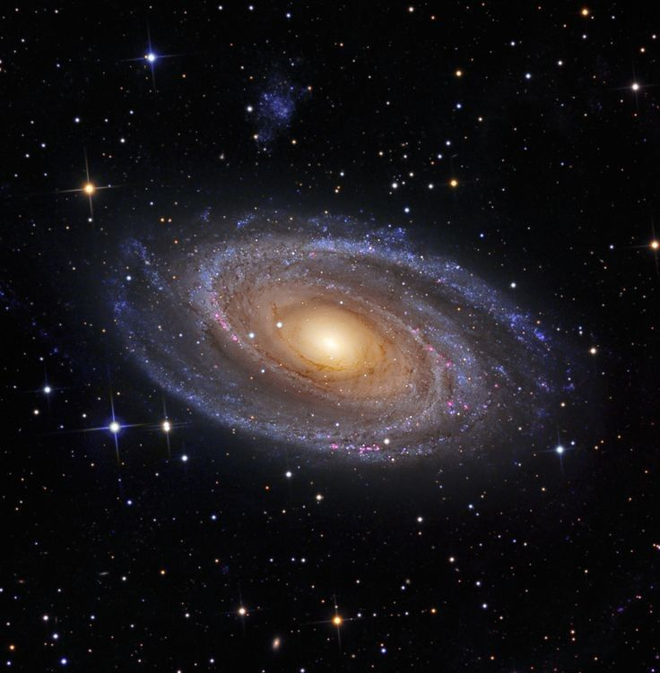
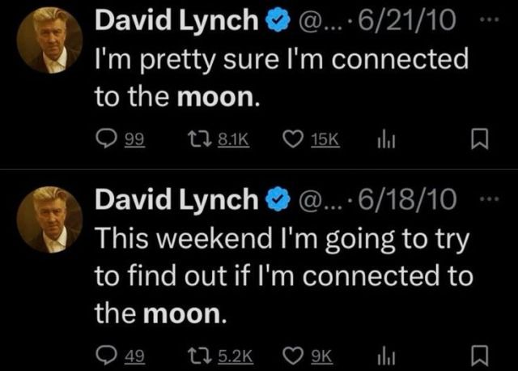

"Every thing has an instant in which it is. I want to grab hold of the is of the thing. These instants passing through the air I breathe: in fireworks they explode silently in space."
 “I, creature of echoing caverns that I am, [and] I suffocate because I am word and also its echo”
“What shall I tell you: I shall tell you the instants. I go too far and only then do I exist and in a feverish way”
“Is my theme the instant? the theme of my life. I try to keep up with it, I divide thousands of times into as many times as the number of instants running by, fragmented as I am and the moments so fragile-my only vow is to life born with time and growing along with it: only in time itself is there room enough for me”
“To interpret myself and formulate me I need new signs and new articulations in shapes found on this side and beyond my human story. I transfigure reality and then another dreaming and sleepwalking reality, creates me. And all of me rolls and as I roll on the ground I add to myself in leaves, I, anonymous work of an anonymous reality only justifiable as long as my life lasts”